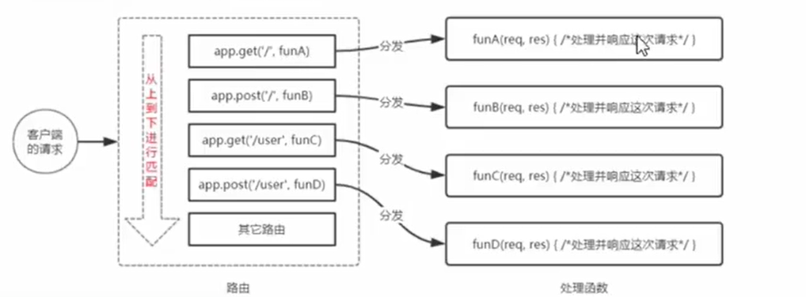

Node.js-express路由
在Express 中，路由指的是客户端的请求与服务器处理函数之间的映射关系。
Express 中的路由分3部分组成
请求的类型
请求的URL地址
处理函数
1
2
3
4app.METHODS(PATH,HANDLER) //METHODS 请求类型 PATH：请求的URL地址 HANDLER：处理函数
//例如：
app.get('/',function(req,res){ res.send("Hello World!") })
路由的匹配过程：
每当一个请求到达服务器之后，需要先经过路由的匹配，只有匹配成功之后，才会调用对应的处理函数。
在匹配时，会按照路由的顺序进行匹配，如果请求类型和请求的URL同时匹配成功，则Express 会将这次请求，转交给对应的function函数进行处理。

最简单实例（将路由挂载到app身上）：
1 | app.get('/',(req,res) => { res.send() }) |
模块化路由
为了方便对路由进行模块化的管理，Express 不建议将路由直接挂载到app 上，而是推荐将路由抽离为单独的模块。
步骤：
创建路由模块对应的js文件
调用express.Router()函数创建路由对象
向路由对象上挂载具体的路由
使用module.exports向外共享路由对象
使用app.use()函数注册路由模块
1
2
3
4
5
6
7
8var express = require('express'); //导入express
var router = express.Router(); // 创建路由对象
router.get('/user/list',function(res,req){ res.send() }) //挂载获取用户列表的路由
router.post( " /user/add"， function (req，res){ res.send() }) //挂载添加用户的路由
module.exports = router // 向外导出路由对象
注册路由模块
1 | //1.导入路由模块 |
整体文件：
1 | const express = require("express") |
为路由模块添加前缀
类似于托管静态资源时，为静态资源统一挂载访问前缀一样，路由模块添加前缀的方式也非常简单:
1 | //导入路由模块 |